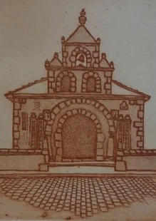

Stan Brookfield

Wedi’i leoli ym Mona, artist bywyd gwyllt yn gweithio gyda acrylig, sydd ar hyn o bryd yn addysgu celf a gwaith cwrs.
Based in Mona, a wildlife artist working in acrylics, currently teaching art and course work.
07754272872
stanbrookfield@gmail.com
COEDLYS MONA, BODFORDD, MONA, LL77 7EQ
A55, dewch oddi ar gyffordd 5, cymerwch yr allanfa gyntaf A4080, trowch i’r dde i’r A5 Ffordd Caergybi. Ewch heibio y Maes Awyr, bydd arwydd Mona ar y chwith, arwyddwch i’r chwith yn syth a cymerwch yr agoriad cyntaf cyn i’r lon droi.
A55, come off at J5, take the first exit A4080, turn right onto A5 Holyhead Road. Pass Airfield, Mona sign on left, immediately signal left at the sign, take first opening before the bend.